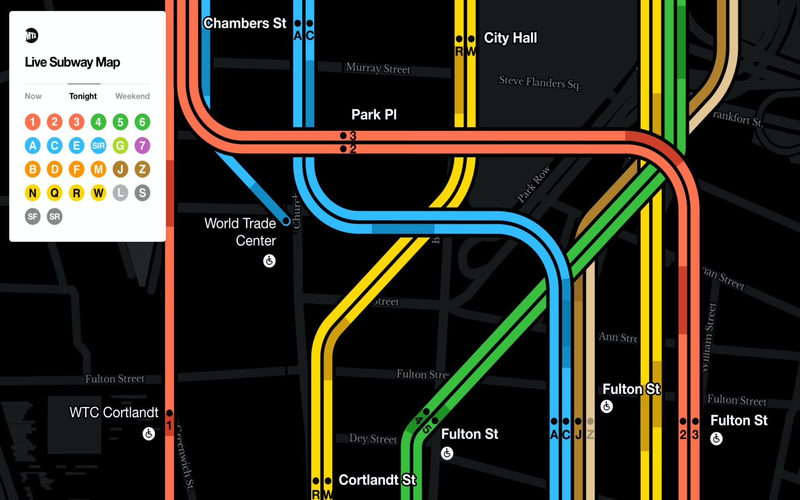
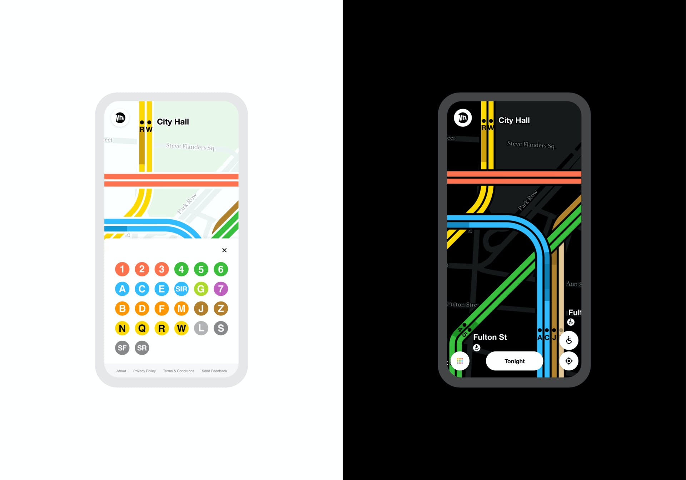

Evolving the iconic map to create updates in real time — and help New Yorkers and tourists better plan their journeys.
Back to Home
MTA


MTA

MTA
Key features of the new map, which is currently in beta, include:
Automatically updating train lines: Train lines will redraw themselves using real-time data to illustrate current and accurate train service status. Sections of train lines fade out where a train line is not running and are denoted with dashes if trains are running in a single direction.
Moving trains: The user will see trains moving, which helps to signal to users that the map is live and also reflect real-time locations of trains throughout the subway system.
Greater map detail is exposed as the user zooms in, including the ability to see individual train lines, subway entrances, station names, and street locations and names.
As seen in The New York Times, Curbed, Fast Company, Time Out New York, and Gothamist, and the subject of a short documentary in collaboration with Gary Hustwit — the acclaimed filmmaker and director of design documentaries including Helvetica, Objectified, and Rams. Check it out next.
Work & Co
Felipe Memoria, Karina Sirqueira, Francesco Bertelli, Corey Edmondson, Marcela Abbade, Robert Penner, Pedro Putz, Maria Clara Santana, Abbey Mondshein, David Whitely, Nick Bethlem